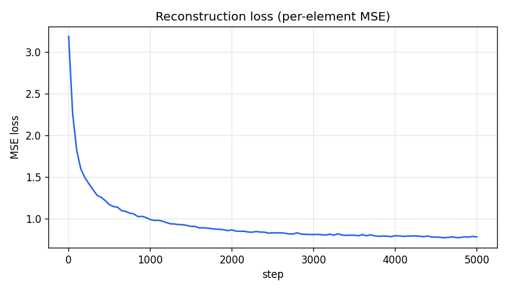
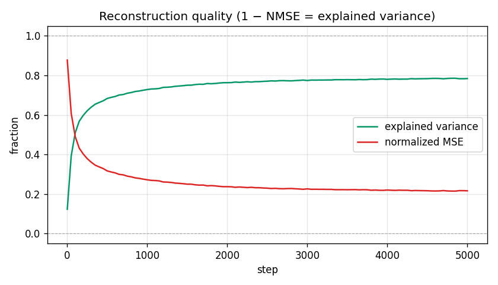
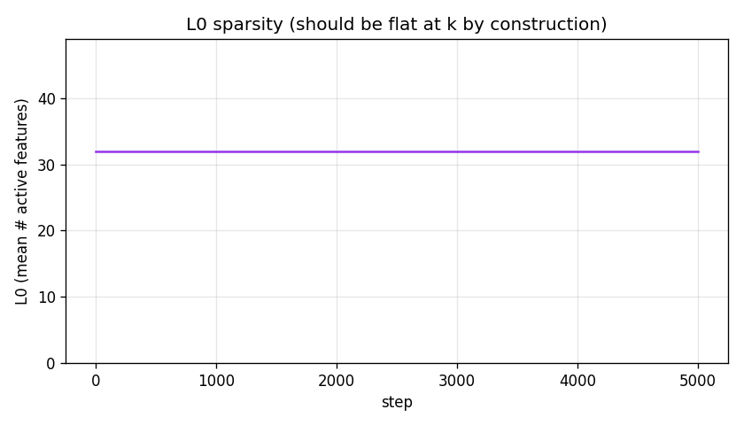
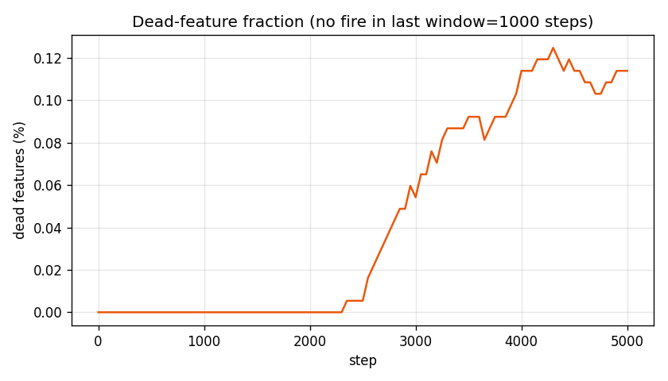
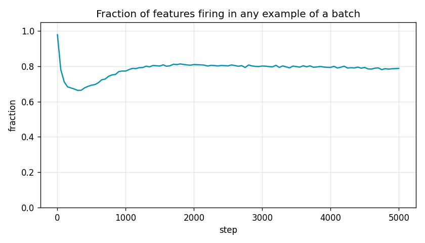
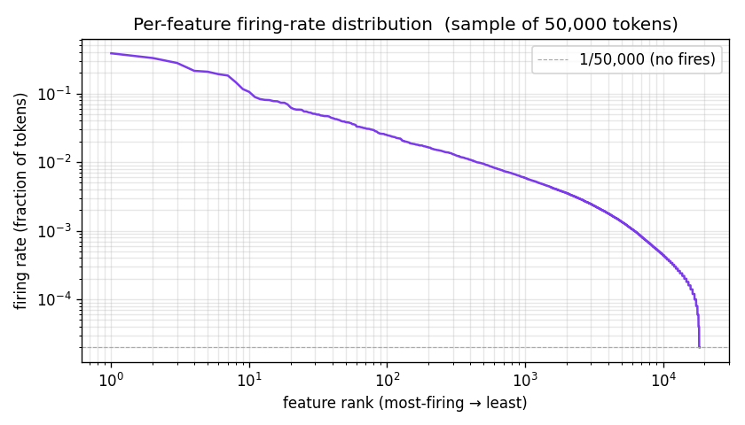
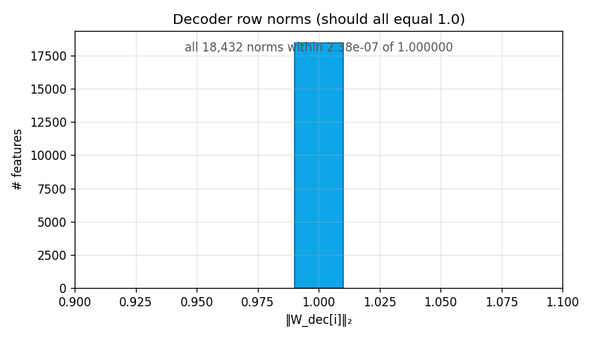

TopK SAE on Gemma 2 2B layer-12 residual activations, trained on the 500k-token harvest.
| steps | 5,000 |
| wall time | 4379 s (73.0 min) |
| final MSE loss | 0.7817 |
| final normalized MSE | 0.216 |
| final explained variance | 78.4% |
| L0 (target = k) | 32.0 (k = 32) |
| dead features (window=1000) | 20 / 18,432 (0.114%) |
| dead features (sample, no fires in 50k tokens) | 67 / 18,432 |

Per-element squared error between input activations and the SAE's reconstruction. Monotone decrease confirms the optimizer is making progress. Note the y-axis is the average squared error per residual dimension — the absolute number depends on the activation scale (Gemma-2-2b layer 12 has fp16 activations with O(10) per-dim magnitude).

This is the “accuracy” metric for SAEs. There is no classification accuracy because the task is reconstruction. Normalized MSE divides each example's squared error by its squared distance from the dataset mean, so a trivial mean-predictor gets NMSE = 1.0 (EV = 0); perfect recon gets NMSE = 0 (EV = 1). Our run ends at EV ≈ 0.78 — the SAE captures ~78% of the residual-stream variance using only k = 32 features per token.

Average number of nonzero features per token. With TopK this is exactly
k by construction — useful only as a sanity check that the TopK
op is wired correctly. With L1-penalized SAEs this curve drifts
and tuning it is the whole game.

Fraction of features whose pre-activation has not entered any token's top-k for the past 1000 steps. Once a feature stops firing it stops getting gradient and tends to stay dead. Our run plateaus at ~21 dead features (0.11%) — small enough that resampling isn't worth implementing yet. For larger dictionaries (32× and up) this is the headline failure mode.

Fraction of features that fire in at least one example of the current batch. At init nearly all features fire on random inputs (~98%). The dip around step 100–500 is the encoder specializing. The rebound to ~80% is the model rediscovering the broad set; the gap from 100% is partly batch noise and partly genuinely-rare features.
Computed by loading the final checkpoint and forward-passing
a fresh sample of 50,000 tokens.

Sort all 18,432 features by how often they fired across the sample, then
plot rank vs firing-rate on log-log axes. A healthy SAE shows a roughly
power-law distribution: a few very-frequent features (function words, common
contexts) and a long tail of rare-but-specific features. Hard floor at
1/n_sample marks "never fired in this sample" — the count
after the cliff is the empirical dead count.

Sanity check: normalize_decoder() should keep every row of
W_dec at exactly unit norm. The histogram should be a single
spike at 1.0. Any spread means the projection step is broken.
Standard SAE diagnostics in the literature that aren't in this report:
z values when a feature is active.
Bimodal/long-tailed magnitudes are healthy; very tight clusters can
indicate dead-on-arrival features.Ordering by ROI for our project: auto-interp on a handful of features (cheap, tells us if anything is interpretable) → CE-delta eval (cheap, tells us reconstruction is faithful where it matters) → re-harvest more tokens and rerun.
| run name | layer12_topk_k32_dict8x_smoke |
| source model | google/gemma-2-2b |
| layer | 12 |
| d_model | 2304 |
| n_features | 18,432 (= 8 × d_model) |
| k (TopK) | 32 |
| batch size | 4096 |
| learning rate | 0.0003 |
| training steps | 5000 |
| seed | 0 |